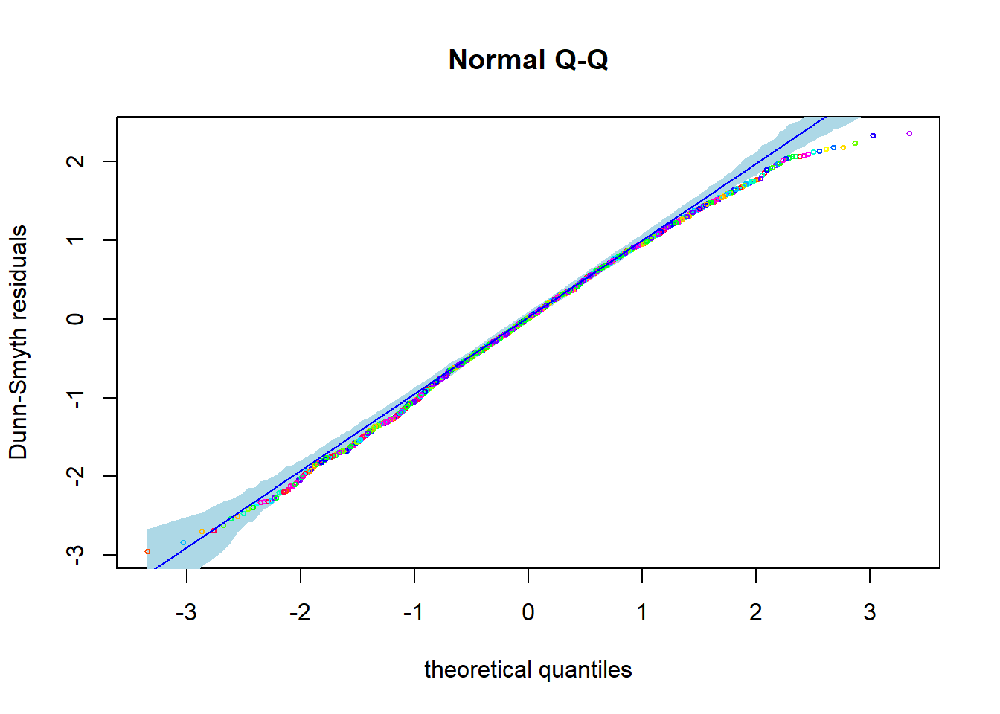
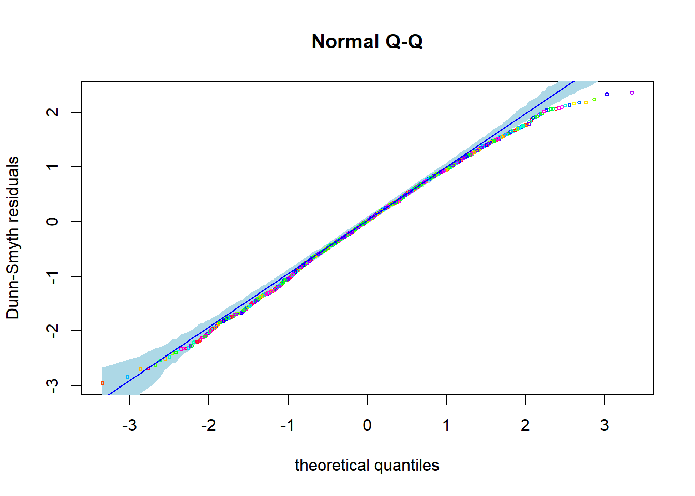
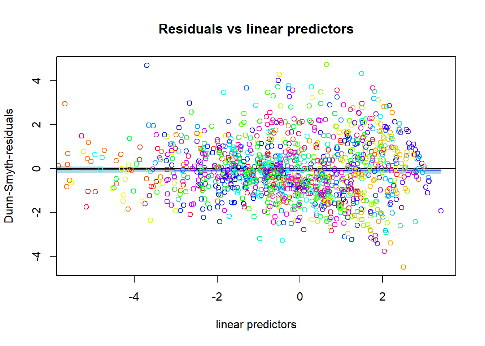
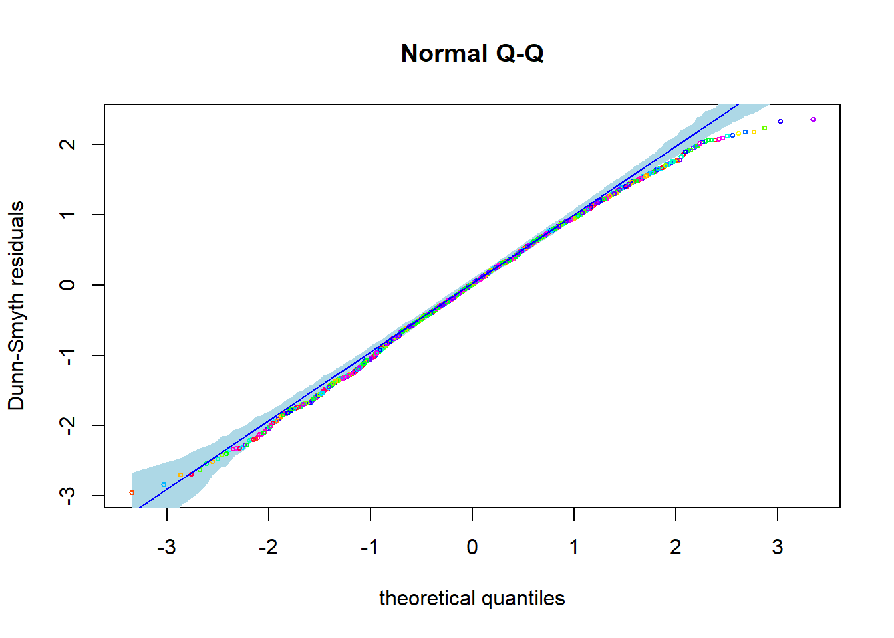
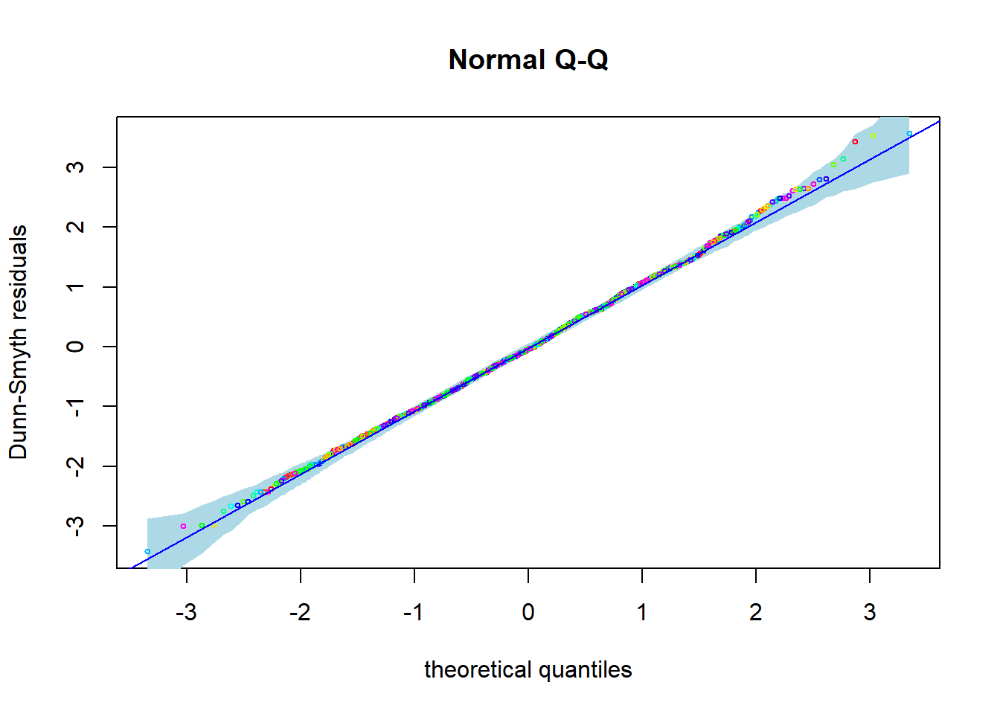
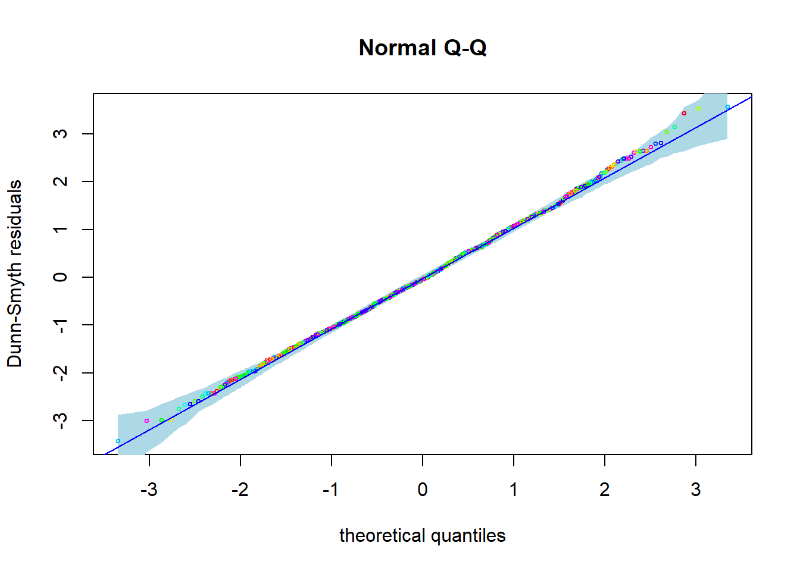

In this post we will analyze the antTraits data with generalized linear latent variable models fit with the gllvm R package (Niku et al. 2020). Elsewhere on the blog you can find an analysis of the same data using mvabund and boral.
First of we will setup the analysis by loading the required libraries. If you haven’t already done so, you will need to install the pacman R package before running this code.
pacman::p_load(gllvm, corrplot, gclus, lattice)The antTraits data set we will analyze today is included mvabund and gllvm so we can load it using the data() function.
data("antTraits")
y = as.matrix(antTraits$abund)
X = scale(as.matrix(antTraits$env))
# here we avoid T as object name to avoid confusion
# with the short form of TRUE
TR = antTraits$traitsFirst we fit a unconstrained ordination model with a Poisson distribution. Unconstrained means that only look at one matrix (Y) without constaining it by any other matrix (X or TR). Thus all the gllvm() function needs is one data matrix (y) and a family argument.
fit_uo_po <- gllvm(y = y,
family = poisson())Using the generic plot() function we can have a look at the Dunn-Smyth residuals. The first plots shows fan shape. It is weaker than the one we have seen in the Poisson manyglm but still noticeable. The rest of the plots looks fine, with the exception of the QQ plot which indicates overdispersion. Note that these later plots are not shown here in the interest of space but you can plot them by changing or omitting the which argument.
plot(fit_uo_po, which = 1)
Let’s see if a negative binomial model looks better.
fit_uo_nb <- gllvm(y = y,
family = "negative.binomial")plot (fit_uo_nb, which = c(1,2))
The fan shape in the first plot is gone and instead of an over- we now have an underdispersion. Maybe this is because we do not actually have overdispered data but rather zero-inflated (i.e. more zeros than expected but other than that mean-variance assumptions hold). To test this we can fit a zero-inflated Poisson (ZIP) model
fit_uo_zip <- gllvm(y = y,
family = "ZIP")plot (fit_uo_zip, which = c(1,2)) 

This looks very good! Calling summary on the model object returns several interesting details. We get the log-likelihood of the model, its degrees of freedom, AIC, AICc, BIC, call and family. We also get the regression coefficients for every species as well as the zero inflation probability are also included. Not included are the latent variable values or site score (\(u_{ij}\) in (Niku et al. 2020))
The AIC values confirm our interpretation of the residual plots.
summary(fit_uo_zip)$AIC < summary(fit_uo_nb)$AIC &
summary(fit_uo_nb)$AIC < summary(fit_uo_po)$AIC## [1] TRUEWe can plot an ordination diagram which shows the site scores of the sites which are represented by their number. If we set biplot to TRUE we can additionally display taxa. The number of taxa is determined in the ind.spp argument. If ind.spp is smaller than the number of species, species are added according how indicative they are, or in other words how strongly they react to the latent variables (i.e. how large their coefficients are). These names are added to the plot in a way that the limits of the plots do not take them into account so you might have to extend them with xlim and ylim to find all the taxa you requesed.
ordiplot(fit_uo_zip,
biplot = TRUE,
ind.spp = 4,
xlim = c(-5,3)
)Ok, now lets use the trait data to fit a constrained model. Actually, we will fit two different models. One with two and one with three latent variables. Which one fits better can be evaluated with Akaike’s Information Criterion (AIC).
fit_co_zip2 <- gllvm(y, X, num.lv = 2,
formula = ~ Bare.ground + Shrub.cover +
Volume.lying.CWD + Canopy.cover + Feral.mammal.dung,
family = "ZIP")
fit_co_zip3 <- gllvm(y, X, num.lv = 3,
formula = ~ Bare.ground + Shrub.cover +
Volume.lying.CWD + Canopy.cover + Feral.mammal.dung,
family = "ZIP")summary(fit_co_zip2)$AICc## [1] 3114.732summary(fit_co_zip3)$AICc## [1] 2995.654Based on AIC (not shown) and AICc the model with three latent variables fits the data better. Hence we cannot display all the variation in a single plot and will instead use three seperate plots.
for(i in 1:3){
lvs = switch(i, c(1,2), c(1,3), c(2,3))
ordiplot(fit_co_zip3,
biplot = TRUE,
ind.spp = 4,
xlim = c(-5,5),
which.lvs = lvs
)
}Similarly to mvabund and BORAL we can disply coefplots
coefplot.gllvm(fit_co_zip3)Lastly we can also fit models with traits. The traits are implemented though a fourth corner model. For more details see the gllvm Reference manual Fitting the following model with three latent variables resulted in an error, so we continue with two.
fit_4th <- gllvm(
y = y,
X = X,
TR = TR,
family = "ZIP",
num.lv = 2,
formula = y ~
(Bare.ground + Shrub.cover + Volume.lying.CWD + Canopy.cover + Feral.mammal.dung) +
(Bare.ground + Shrub.cover + Volume.lying.CWD + Canopy.cover + Feral.mammal.dung):
(Pilosity + Polymorphism + Webers.length))As with other methods we can plot the results of the fourth corner model in a levelplot.
fit_4th$fourth.corner## Pilosity1 Pilosity2 Pilosity3 Polymorphism1
## Bare.ground -0.01171499 0.02722186 0.0245424925 0.380905402
## Canopy.cover -0.24088890 -0.20771766 -1.0386106283 0.665032965
## Shrub.cover 0.43886366 0.54055450 0.6149570202 -0.005953297
## Volume.lying.CWD -0.07908846 -0.15048241 -0.0899778428 0.162290896
## Feral.mammal.dung -0.15329305 -0.03296817 -0.0005479166 -0.069571330
## Polymorphism2 Webers.length
## Bare.ground 0.14577313 -0.006734829
## Canopy.cover -0.31239626 -0.452513600
## Shrub.cover 0.18549706 0.128718274
## Volume.lying.CWD 0.06080096 0.025923648
## Feral.mammal.dung 0.29737997 0.089033341fourth = fit_4th$fourth.corner
colort = colorRampPalette(c("blue", "white", "red"))
a = max( abs(fourth) )
plot.4th = levelplot((as.matrix(fourth)), xlab = "Environmental Variables",
ylab = "Species traits", col.regions = colort(100), cex.lab =1.3,
at = seq(-a, a, length = 100), scales = list(x = list(rot = 45)))
plot.4thThese results differ from those obtained in the manyglm. Most interesting are the cases where the sign in front of the coefficient is different between both methods like for Pilosity and Canopy Cover or Volume of lying CWD.
We can evaluate whether traits matter in this context or not by comparing the model with traits with one that does not include traits using an ANOVA. Unfortunately we can not use the model we fit previously but have to fit a new one.
fit_4th2 <- gllvm(
y,
X,
TR,
family = "ZIP",
num.lv = 2,
formula = y ~ (
Bare.ground + Shrub.cover +
Volume.lying.CWD + Canopy.cover +
Feral.mammal.dung
)
)trait_anoa = anova(fit_4th, fit_4th2)## Model 1 : y ~ (Bare.ground + Shrub.cover + Volume.lying.CWD + Canopy.cover + Feral.mammal.dung)
## Model 2 : y ~ (Bare.ground + Shrub.cover + Volume.lying.CWD + Canopy.cover + Feral.mammal.dung) + (Bare.ground + Shrub.cover + Volume.lying.CWD + Canopy.cover + Feral.mammal.dung):(Pilosity + Polymorphism + Webers.length)## Resid.Df D Df.diff P.value
## 1 1062 0.0000 0
## 2 1032 114.0782 30 9.85079e-12According to this ANOVA the model including the traits is more appropriate because the difference in Deviances is statistically significant. This supports the hypothesis that the reaction to the environment is mediated by traits.
Niku, Jenni, Wesley Brooks, Riki Herliansyah, Francis K. C. Hui, Sara Taskinen, David I. Warton, and Bert van der Veen. 2020. Gllvm: Generalized Linear Latent Variable Models. https://CRAN.R-project.org/package=gllvm.